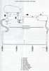

{kind=link}


System / Fuel Pump / Fuel Reg:

Low Pressure Fuel
High Pressure Fuel
While most vehicle fuel systems use solid fuel rails, etc, this isn't
really convenient for a V-twin. The injectors are solidly held into
the throttle bodies already, thankfully. All the fuel plumbing is going to
have to use high-pressure EFI fuel line and clamps, but what the
hell, there's only two injectors. Hopefully I can get all the
bits in the right sizes (the pump outlet is particularly large).
If the bit of line connecting the jets could be bigger than the
injector stubs, that'd be good too, just like the stock GPz fuel
rail.
Manifold Air Pressure
The fuel pressure regulator uses MAP as a reference pressure.
The ECU may need a pressure input too. There's a vacuum
reference stub on the top of each throttle body, these can
be connected with vacuum hose and T-pieces. An inline fuel
filter could be used to provide some extra volume for
damping out pressure fluctuations.
homepage / motorcycles / Homebrew EFI